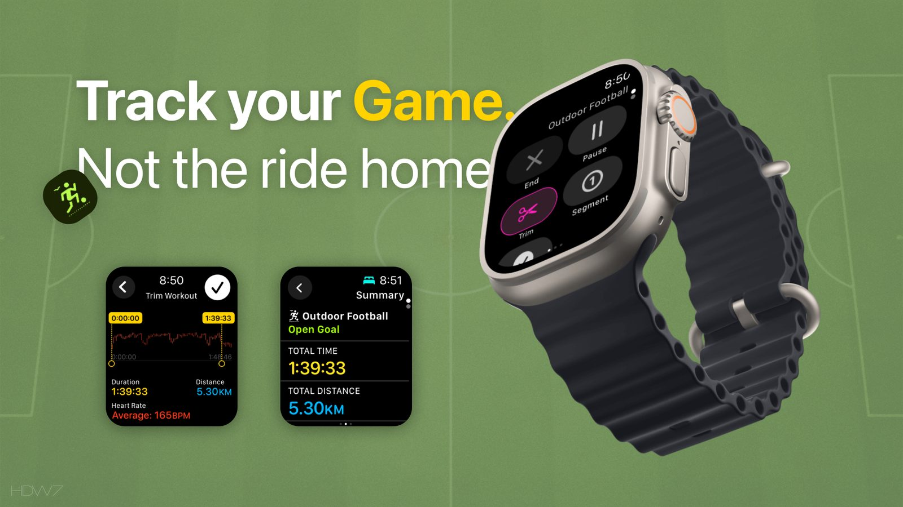
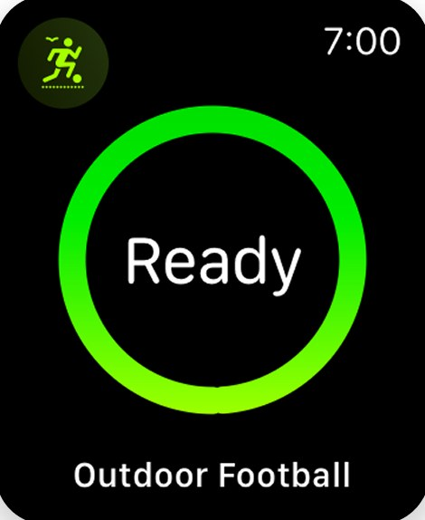
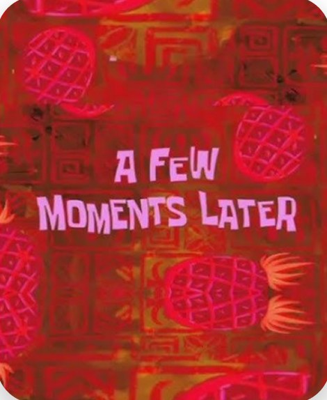
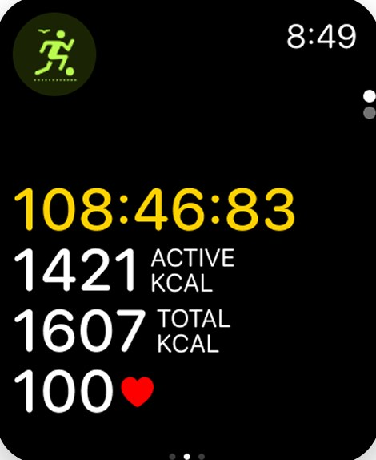
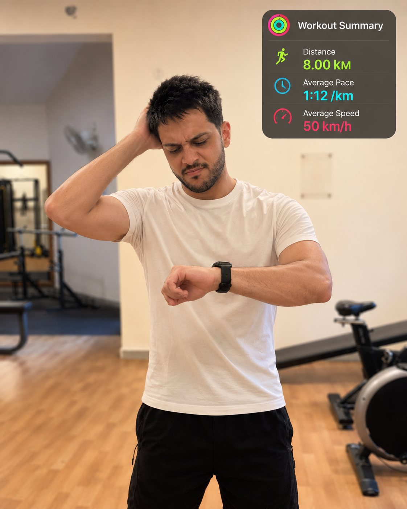

- Feature proposal
- watchOS
Trim Workout
Track your game, not the ride home. A proposal for trimming an Apple Watch workout you forgot to end.

The story
My Sunday match
7:00 AM
Kick-off
Twice a week, I play football with friends at the turf. I start an Outdoor Football workout.

8:15 AM
Final whistle
About 75 minutes of football. I get in my car and drive home.

8:50 AM
WTF?!
Home. I glance at my watch before washing up. The workout is still running, and it has counted the 8 km drive.


I’d played well and couldn’t wait to see my stats.
Now I’ll never know how well.
The problem
The watch counts the drive home
Anyone on a fitness journey wants to track their progress accurately. Forget to end a workout, and the watch counts the car ride home as part of it, treating you like the second coming of Usain Bolt and throwing off your data.
The solution
Try it: swipe right on the watch, tap Trim, then drag the end handle back to the final whistle
Trim it like a video
People only notice the mistake when they glance at the workout still running on their watch, which is often too late. All they can do today is end the workout. That is where Trim Workout comes in. It complements the reminder: the reminder tries to prevent the mistake, Trim fixes it when prevention fails.
Swipe right and tap Trim, then use time and heart rate as guides to find where the workout really ended. The interaction mirrors trimming a video, and the summary updates to show only the real effort.
Design feedback
Built from what watchOS already has
My strategy was to find a suitable solution within the watchOS library without compromising the user experience.
I interviewed 7 of my football friends who use an Apple Watch and explained the scenario, which they immediately related to. I shared the prototype and watched them navigate and reach their goals without second-guessing. They even used Trim correctly, since it works like trimming videos in their Photos app.
It started as my own problem. Asking around, it turned out to be a mildly infuriating experience for others too: annoying enough to remember, never quite enough to report.
The time slider from the Fitness app was reused, so the feature feels native to the watchOS ecosystem.
The impact
Data you can trust again
With Trim, I could remove the extra data so only my time on the pitch counted. That leads to:
- Improved data accuracy. Precise workout stats with unintentional data removed.
- Enhanced user trust. Giving people control builds trust in the product’s reliability and thoughtfulness.
- Better training insights. Decisions based on real effort, not distorted metrics.
- Emotional resonance. People feel ownership over their progress.
- A single source of truth. Activity rings, awards and Health all update from the trimmed workout.
- User control. The person decides where the workout ends, and their trim overrides what the watch recorded.
Now my stats reflect the game, not the drive.